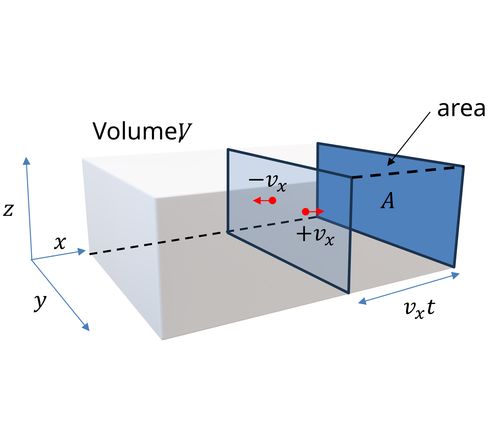
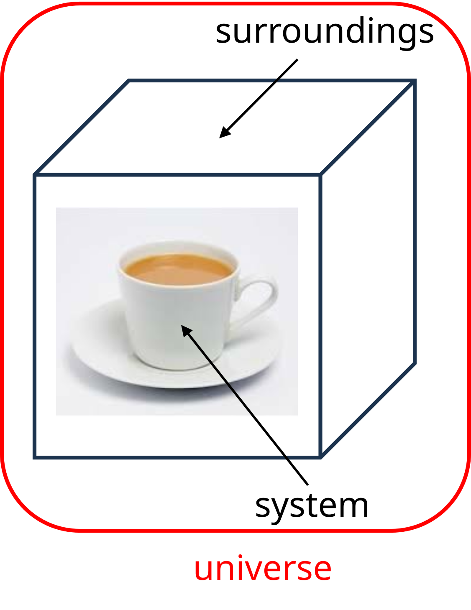
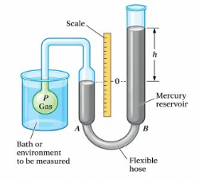
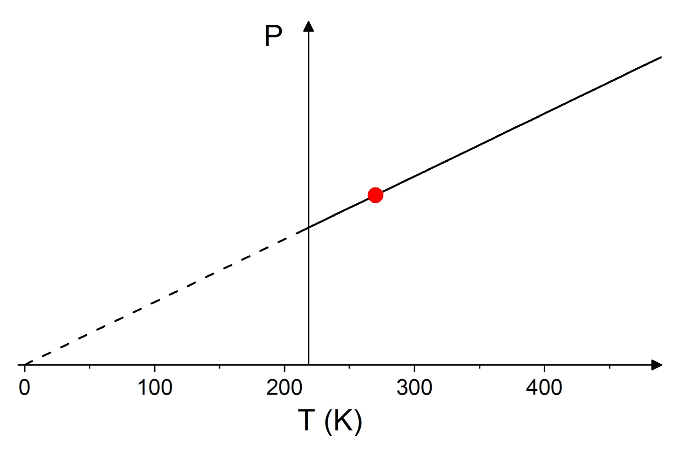
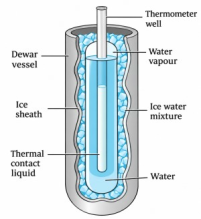

3 Ideal Gases
3.1 Learning outcomes
By the end of this chapter, you should be able to:
- describe the assumptions of the ideal-gas model and use the equation of state;
- explain thermal equilibrium, the zeroth law and the operational meaning of temperature;
- distinguish the Celsius and kelvin scales and describe a constant-volume gas thermometer;
- relate pressure, volume and temperature in simple transformations;
- explain the statistical meaning of temperature and the principle of equipartition;
- calculate internal energy and molar heat capacities of ideal gases, including the effect of molecular degrees of freedom.
Chapter 4 develops the molecular-collision derivation and Maxwell–Boltzmann statistics in greater detail. The first law and thermodynamic work are developed systematically in Chapter 6.
3.2 The ideal-gas model
A gas consists of an enormous number of particles in continuous, irregular motion. In the ideal-gas model, we assume that (i) the particles occupy negligible volume compared with the container, (ii) there are no intermolecular forces except during brief collisions, and (iii) collisions between molecules and with the walls are elastic. We also assume a gas in thermal equilibrium, with a well-defined temperature.

These are approximations, not statements that real molecules are dimensionless or never interact. The ideal model works particularly well for sufficiently dilute gases, away from condensation.
3.2.1 Gas laws and the equation of state
At fixed temperature and amount of gas, Boyle’s law gives \(PV=\mathrm{constant}\). At fixed pressure, Charles’ law gives \(V/T=\mathrm{constant}\), where \(T\) is the absolute temperature. Combining the empirical laws leads to
\[ \boxed{PV=nRT=Nk_{\mathrm B}T.} \tag{3.1} \]
Here \(P\) is absolute pressure, \(V\) is volume, \(n\) is the amount of substance in moles, \(N\) is the number of molecules, \(R=8.314\,462\,618\ldots\,\mathrm{J\,mol^{-1}\,K^{-1}}\) and \(k_{\mathrm B}=1.380\,649\times10^{-23}\,\mathrm{J\,K^{-1}}\). Since \(N=nN_{\mathrm A}\), we have \(R=N_{\mathrm A}k_{\mathrm B}\).
Always use kelvin, not degrees Celsius, in \(PV=nRT\) and related ratios such as \(V/T\).
Worked example. One mole of gas occupies \(24.0\,\mathrm L\) at \(300\,\mathrm K\). The pressure is
\[ P=\frac{nRT}{V}=\frac{(1)(8.314)(300)}{0.0240} \simeq1.04\times10^5\,\mathrm{Pa}. \]
For a fixed amount of ideal gas in two equilibrium states,
\[ \boxed{\frac{P_1V_1}{T_1}=\frac{P_2V_2}{T_2}.} \tag{3.2} \]
For example, at fixed pressure, doubling the absolute temperature doubles the volume. At fixed volume, doubling \(T\) doubles \(P\).
3.3 Thermal equilibrium and the zeroth law
Temperature determines the direction of spontaneous heat transfer between systems that can exchange energy thermally: energy flows as heat from higher temperature to lower temperature until thermal equilibrium is reached (subject to the absence of other driving effects). A thermometer works because it is allowed to reach thermal equilibrium with the object being measured.
The zeroth law of thermodynamics states:
If system A is in thermal equilibrium with system C, and system B is in thermal equilibrium with system C, then A and B are in thermal equilibrium with each other.
This transitive property makes temperature a meaningful measurable state variable. A thermometer can act as a third system used to compare the temperatures of two objects. Thermal equilibrium should not be confused with mechanical equilibrium (equal pressures) or chemical equilibrium.

A closed system can exchange energy but not matter with its surroundings. An open system can exchange both; an isolated system exchanges neither. These distinctions will become important in Chapter 6.
3.4 Temperature scales and gas thermometry
The kelvin and Celsius scales have the same size degree, but different zero points:
\[ T/\mathrm K=\theta/{}^\circ\mathrm C+273.15. \]
In a constant-volume gas thermometer, a fixed amount of sufficiently dilute gas is confined at constant volume. Equation (3.1) predicts
\[ P=\frac{nR}{V}T. \]
Thus pressure provides a measure of absolute temperature. Plotting pressure against Celsius temperature and extrapolating the straight line to zero pressure gives approximately \(-273.15\,{}^\circ\mathrm C\).


The extrapolation is an idealisation: real gases depart from ideal behaviour, and a gas may liquefy before reaching very low temperatures. The historical triple point of water is at \(273.16\,\mathrm K\) (\(0.01\,{}^\circ\mathrm C\)); it was once used to define the kelvin. Since 2019 the SI kelvin has instead been defined by fixing the numerical value of \(k_{\mathrm B}\) exactly.

3.5 Temperature and molecular motion
The ideal-gas equation is a macroscopic description: it relates measured pressure, volume and temperature without directly describing individual molecules. Kinetic theory supplies the microscopic link. For \(N\) identical particles of mass \(m\) in equilibrium,
\[ PV=\frac13Nm\langle c^2\rangle, \]
where \(c\) is molecular speed and \(\langle c^2\rangle\) is its mean square. Comparing with \(PV=Nk_{\mathrm B}T\) gives
\[ \boxed{\left\langle\frac12mc^2\right\rangle=\frac32k_{\mathrm B}T.} \tag{3.3} \]
This applies to the translational motion of a classical gas in equilibrium. It does not mean that all molecules have the same speed, nor does it mean that temperature is defined solely by translational kinetic energy in every kind of matter. We derive the pressure result from wall collisions and the full distribution of molecular speeds in Chapter 4.
3.6 Equipartition and molecular degrees of freedom
The classical equipartition theorem states that each independent quadratic term in the energy contributes an average \(\tfrac12k_{\mathrm B}T\) per molecule at thermal equilibrium, provided the classical approximation is valid.
For translational motion,
\[ E_{\mathrm{tr}}=\frac{p_x^2}{2m}+\frac{p_y^2}{2m}+\frac{p_z^2}{2m}, \]
there are three quadratic contributions, giving \(3k_{\mathrm B}T/2\) per molecule. For a gas of \(N\) noninteracting monatomic particles, neglecting electronic excitation,
\[ \boxed{U=\frac32Nk_{\mathrm B}T=\frac32nRT.} \tag{3.4} \]
Here \(U\) is internal energy, the total microscopic energy of the system measured relative to an arbitrary reference. It is a state function. For an ideal gas with fixed composition and accessible degrees of freedom, \(U\) depends on temperature alone.
3.6.1 Diatomic molecules
At ordinary temperatures, a typical linear diatomic molecule has three translational and two rotational quadratic kinetic contributions. If vibration is not appreciably excited, the molar internal energy is approximately
\[ U=\frac52nRT. \]
At sufficiently high temperatures, the vibrational mode becomes excited. In the classical limit, a harmonic vibrational mode contributes \(k_{\mathrm B}T\) per molecule: half from kinetic energy and half from potential energy. This raises the corresponding high-temperature result to \(U\approx\tfrac72nRT\) for one active vibrational mode, assuming the molecular model remains valid.
Rotational and vibrational energy levels are quantised. A mode whose excitation energy is large compared with \(k_{\mathrm B}T\) is effectively frozen out and contributes little to heat capacity. Classical equipartition becomes reliable when the relevant energy spacings are small compared with \(k_{\mathrm B}T\).
3.7 Heat capacity at constant volume and constant pressure
Heat capacity tells us how much energy must be transferred as heat to produce a specified temperature change under defined conditions. For a closed simple compressible system doing only pressure–volume work, the molar heat capacities are
\[ C_{V,m}=\frac1n\left(\frac{\partial U}{\partial T}\right)_V, \qquad C_{P,m}=\frac1n\left(\frac{\partial H}{\partial T}\right)_P, \]
where \(H=U+PV\) is enthalpy. The corresponding total heat capacities are \(C_V=nC_{V,m}\) and \(C_P=nC_{P,m}\). At constant volume, with no other work, \(\delta Q=dU\). At constant pressure, with only pressure–volume work, \(\delta Q=dH\).
For an ideal gas \(PV=nRT\), so \(H=U+nRT\). Consequently,
\[ \boxed{C_{P,m}-C_{V,m}=R.} \tag{3.5} \]
For a monatomic ideal gas,
\[ C_{V,m}=\frac32R,\qquad C_{P,m}=\frac52R,\qquad \gamma\equiv\frac{C_{P,m}}{C_{V,m}}=\frac53. \]
For a typical diatomic gas near room temperature (with vibration frozen out),
\[ C_{V,m}\simeq\frac52R,\qquad C_{P,m}\simeq\frac72R,\qquad \gamma\simeq\frac75=1.40. \]
Worked example: nitrogen. For one mole of nitrogen at \(T=293\,\mathrm K\), the approximate internal energy in this model is
\[ U\simeq\frac52RT\simeq6.09\,\mathrm{kJ}. \]
For a constant-volume temperature increase of \(20\,\mathrm K\), the heat required is \(Q\simeq nC_{V,m}\Delta T=(5/2)R(20)\simeq416\,\mathrm J\).
3.8 What the ideal-gas model does not describe
At high density or near a phase transition, finite molecular size and intermolecular attractions become important. The ideal-gas equation then becomes inaccurate. Real gases, the van der Waals equation and phase behaviour are considered in Chapter 5.
3.9 Problems
- Equation of state. Calculate the pressure of \(0.75\,\mathrm{mol}\) of ideal argon in \(5.0\times10^{-4}\,\mathrm{m^3}\) at \(600\,\mathrm K\).
- Combined gas law. A fixed amount of gas doubles its absolute temperature while its pressure triples. Find \(V_2/V_1\) and the ratio \(\rho_2/\rho_1\).
- Gas thermometer. Explain why extrapolating pressure to zero at fixed volume provides an estimate of absolute zero, and identify two limitations of the procedure.
- Zeroth law. Describe how a thermometer can measure the temperature of two separate objects without placing the objects in contact with each other.
- Equipartition. Calculate the average translational kinetic energy of one molecule at \(300\,\mathrm K\), and explain why this is not the kinetic energy of every molecule.
- Internal energy. Estimate the internal energy of one mole of nitrogen gas at \(20\,{}^\circ\mathrm C\) using the room-temperature diatomic model.
- Heat capacities. Derive \(C_{P,m}-C_{V,m}=R\) for an ideal gas and calculate \(\gamma\) for a monatomic gas.
- Degrees of freedom. Explain why a diatomic gas may have a larger heat capacity at high temperature than at room temperature.
Worked solutions are available separately.
3.10 Further reading
For background, see the sections on the ideal-gas equation, temperature, molecular degrees of freedom and heat capacities in Blundell & Blundell, Concepts in Thermal Physics, and Kittel & Kroemer, Thermal Physics.